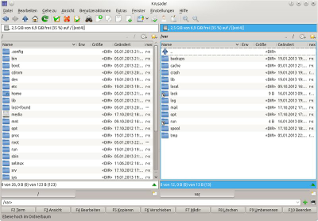
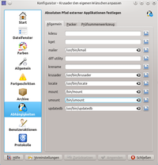

Krusader
Dieser Artikel wurde für die folgenden Ubuntu-Versionen getestet:
Ubuntu 17.10 Artful Aardvark
Ubuntu 16.04 Xenial Xerus
Ubuntu 14.04 Trusty Tahr
Zum Verständnis dieses Artikels sind folgende Seiten hilfreich:
Krusader  ist ein seit Mai 2000 existierender Dateimanager für Linux mit sehr weitreichendem und erweiterbarem Funktionsumfang.
ist ein seit Mai 2000 existierender Dateimanager für Linux mit sehr weitreichendem und erweiterbarem Funktionsumfang.
Das Programm ist an den Dateimananger Total Commander  angelehnt, der in der Windows-Welt als sehr leistungsfähig gilt.
angelehnt, der in der Windows-Welt als sehr leistungsfähig gilt.
Seit Ubuntu 17.04 setzt Krusader auf Qt5 auf. Das Erscheinungsbild wirkt in Teilen verändert und bisherige Konfigurationen werden nicht weiterverwendet.
Funktionen¶
 Krusader besitzt eine Menge an Funktionen:
Rootmodus
Netzverbindung
Mehrfachumbennenung
sofortiges Ansehen, Ändern, Packen und Entpacken vieler Archive
Dateien splitten
Dateien vergleichen
Verzeichnisse vergleichen und synchronisieren
Integrierter Editor/Betrachter
Benutzeraktionen (eng. Useractions; vergleichbar mit Makros, z.B. editiere als Root)
Unterstützung der KIO-Slaves
verschiedene Ansichten von Ordnern und Dateien (Baumstruktur, Vorschau, Platzbedarf)
Dateisuche
schnelles Finden von Dateien basierend auf locate
mehrere Tabs
Weitere Features und Anmerkungen zur Bedienung sind in der Hilfe ( F1 ) aufgeführt.
Installation¶
Obwohl Krusader ein Teil des KDE-Projektes ist, benötigt er nur einige Teile der Qt- und KDE-Bibliotheken, d.h. Krusader kann auch ohne gesamte KDE-Installation verwendet werden.
Paketquellen¶
Folgendes Paket muss installiert werden:
krusader (universe)
 mit apturl
mit apturl
Paketliste zum Kopieren:
sudo apt-get install krusader
sudo aptitude install krusader
Programmstart¶
Nach der Installation ist Krusader unter KDE über zwei Menüpunkte zu erreichen:
"K-Menü -> Anwendungen -> Dienstprogramme -> Krusader" - Benutzermodus
"K-Menü -> Anwendungen -> System -> Krusader" - Rootmodus
Unter GNOME ist Krusader zu erreichen unter dem Menüpunkt:
"Anwendungen -> Zubehör -> Krusader"
Unter LXDE ist Krusader zu erreichen unter dem Menüpunkt:
"Zubehör -> Krusader"
Alternativ kann er auch im Terminal mit folgendem Befehl gestartet werden:
krusader
Erweiterungen¶
Wie in der Einleitung bereits erwähnt, kann Krusader erweitert werden, indem man Programme installiert, auf die Krusader zurückgreifen kann (z.B. Packer). Diese können sein:
| Zweck | Programme |
| Vergleichsprogramm | kdiff3 oder kompare oder xxdiff (siehe auch Textdateien vergleichen) |
| E-Mail Programm | KMail oder Thunderbird |
| Mehrfachumbennenung | Krename |
| Dateien herunterladen | KGet |
| Erlangung der Rootrechte | kdesudo |
Zum Umgang mit Prüfsummen werden folgende Pakete genutzt:
coreutils (enthält md5sum), md5deep (enthält sha1deep, sha256deep, tigerdeep und whirlpooldeep), cfv
Weiterhin kann Krusader die folgenden Packprogramme bzw. Archive nutzen:
tar, bzip2, gzip, lzma, lha, zip, unzip, arj, unace, rar, unrar, rpm, dpkg, p7zip-full
Einstellungen¶
Beim ersten Start öffnet Krusader einen Konfigurationsassistenten. Die darin abgefragten Einstellungen können jedoch auch später unter "Einstellungen -> Krusader einrichten" durchgeführt werden. Hat man die oben genannten Programme installiert, sind diese bereits eingetragen.
Richtige Programmpfade setzen¶

Einige Pfade zu anderen Programmen werden eventuell von Krusader nicht bzw. nicht korrekt gesetzt. Die entsprechenden Dialoge finden sich im Menü "Einstellungen -> Krusader einrichten -> Abhängigkeiten".
| Programm | Reiter | Feld | Befehl |
| kdesudo | Allgemein | kdesu | /usr/bin/kdesudo |
| Vergleichwerkeug | Allgemein | diff-utilty | /usr/bin/kompare, /usr/bin/kdiff3 oder /usr/bin/xxdiff |
Ein anderes Terminal setzt man im Einrichtungsfenster, Abschnitt "Allgemein", im Feld "Terminal".
Krusader als Standard-Dateimanager¶
Unter KDE kann man Krusader als Standard-Dateimanager setzen, indem man in den Systemeinstellungen unter "Erscheinungsbild und Verhalten der Arbeitsfläche -> Standard-Komponenten -> File Manager" das letzte Auswahlfeld aktiviert und dort Krusader hinzufügt.
Krusader immer zum Öffnen von externen Medien anbieten¶
Über das Menü "Systemeinstellungen -> Geräteaktionen" lassen sich nicht alle Medien so auswählen, wie es für den Standarddateimanager vorgesehen ist. Möchte man trotzdem auch immer Krusader zum Öffnen von externen Medien unter KDE angeboten bekommen, dann muss man sich eine passende Desktop-Datei mit folgendem Inhalt anlegen:
[Desktop Entry] X-KDE-Solid-Predicate=[ [ [ StorageVolume.ignored == false AND StorageVolume.usage == 'FileSystem' ] OR [ IS StorageAccess AND StorageDrive.driveType == 'Floppy' ] ] OR StorageAccess.ignored == false ] Type=Service Actions=open; [Desktop Action open] Name=open with Krusader Name[de]=Mit Krusader öffnen Exec=/usr/bin/krusader --left ~ --right "%f" Icon=krusader_user
bis Ubuntu 14.10 unter ~/.kde/share/apps/solid/actions/Mit-Krusader-oeffnen.desktop
und ab Ubuntu 15.04 unter ~/.local/share/solid/actions/Mit-Krusader-oeffnen.desktop
ab. Die Unterordner solid und actions müssen, wenn noch nicht vorhanden, vorher erstellt werden.
- Erstellt mit Inyoka
-
 2004 – 2017 ubuntuusers.de • Einige Rechte vorbehalten
2004 – 2017 ubuntuusers.de • Einige Rechte vorbehalten
Lizenz • Kontakt • Datenschutz • Impressum • Serverstatus -
Serverhousing gespendet von